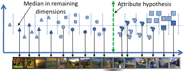

Interactively
Building a Discriminative Vocabulary of Nameable Attributes
Devi Parikh and Kristen Grauman
[In Spanish] [In Ukrainian by StudyCrumb essay writers] [In Hungarian by StudyBounty]
Abstract
Motivation
To be most useful, attributes should be
Discriminative: so that they can be learnt reliably in the available feature-space, and can effectively classify the categories
and
Nameable:
so
that they can be used
for zero-shot learning, describing previously unseen instances or
unsual aspects of images, etc.
| Existing Approaches | Discriminative | Nameable |
| Hand-generated list | Not necessarily | Yes |
| Mining the web | Not necessarily | Yes |
| Automatic splits of categories | Yes | No |
| Proposed | Yes | Yes |
Proposal
To visualize a candidate attribute for which the system seeks a name, a human is shown images sampled along the direction normal to some separating hyperplane in the feature space. Since many hypotheses will not correspond to something humans can visually identify and succinctly describe, a naive attribute discovery process — one that simply cycles through discriminative splits and asks the annotator to either name or reject them — is impractical.
Instead, we design the approach to actively minimize the amount of meaningless inquiries presented to an annotator, so that human effort is mostly spent assigning meaning to divisions in feature space that actually have it, as opposed to discarding un-interpretable splits.
We accomplish this with two key ideas: at each iteration, our approach:
1) focuses on attribute hypotheses that complement the classification power of existing attributes collected thus far, and
2) predicts the nameability of each discriminative hypothesis and prioritizes those likely to be nameable. For this, we explore whether there exists some manifold structure in the space of nameable hyperplane separators.
Approach
There are three main challenges to be addressed in our proposed interactive approach:

Evaluation
"Black"
We
consider a hyperplane
to be nameable if the average 'obviousness' score received is above 3.
This pool of annotated hyperplanes can now be used to conduct automatic
experiments, while still mimicing a real user in the loop.
Results
Discriminative-only baseline: As compared to a baseline that presents the discriminative hyperplanes to the user without nameability modeling (see below), we find that our approach discovers more named attributes with the same user effort, also leading to better recognition performance.
Descriptive-only baseline: On the other hand, as compared to purely descriptive attributes, our approach finds more discriminiative attributes, also leading to improved recognition performance (see below).
Automatically
generated
descriptions:
Publications
D. Parikh and K. Grauman
Interactively Building a Discriminiative Vocabulary of Nameable Attributes
IEEE Conference on Computer Vision and Pattern Recognition (CVPR), 2011
[supplementary material] [poster] [slides]
D. Parikh and K. Grauman
Interactive Discovery of Task-Specific Nameable Attributes (Abstract)
First Workshop on Fine-Grained Visual Categorization (FGVC)
held in conjunction with IEEE Conference on Computer Vision and Pattern Recognition (CVPR), 2011 (Best Poster Award)
[poster]
[Thanks to Yong Jae Lee for the webpage template]